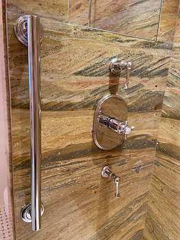
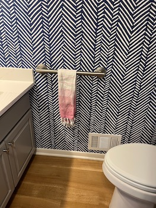
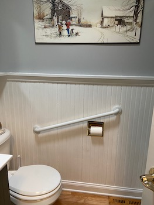
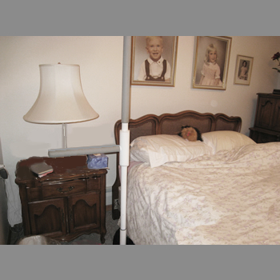
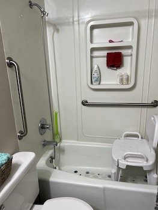

- Paul installed a grab bar here to help the homeowners safely step in and out of a walk-in shower
- The white bars which Paul installed fit seamlessly into a gleaming tub area
- Grab bars installed by the bed safely transfer in tight areas, as well as act as a railing for this client
- Correctly installed by Paul, a decorator towel bar can work as a towel bar, too
- Here's an example of a hinged toilet elevator with a custom diagonal bar installed by Paul
- This battery-operated shower chair, a tub area grab bar, and a SuperPole outside the tub all allow this client to bathe comfortably and safely at home
- Toilet safety arms and a grab bar installed by Paul that doubles as a towel bar
- Tub remodel — nice looking!
- A SuperPole with an arm was installed by Paul to help with transfers to and from a bed
- For a safer transfer in and out of the house a grab bar can go on the door jamb — front door, back door, or garage
- Another decorator bar Paul installed, this one at a diagonal
- Paul has installed many grab bars in fiberglass shower areas
- A SuperPole with an Island is a good choice where no walls are available. Our SERVICES page has more information.
- Here's a unique install by Paul on a dryer that helped this client continue living safely in her home
- Paul installed this decorator towel/grab bar to match the homeowner's decor
- Paul outfitted this shower space to let clients shower safely while either standing or sitting
- Paul installed a tub transfer bench, handheld shower, and grab bars for this client
- Paul installed a custom bar with extension to safely install into studs